June 4, 2023
This one had me working hard to get my head around t- and z-tests, paired two-sample, one-tailed, one-eyed or legged tests, and trying to work out how to compare two groups when I only have three values to work with and no other details. Again, another good learning experience, exploring more about centrality and normality of data distributions and how much can be actually be inferred through statistical understanding/reasoning.
Five different questions, requiring generation of synthetic data, covering both theoretical and practical situations, along with hypothesis testing, checking for normality and comparing means and variance to help answer business questions. It was good having time to get into each question as slowly each one was not so much a test, but more an opportunity to deepen one’s understanding through the process of comparing and repeating with different values.
Install required packages
library(plyr)
library(dplyr)
library(tidyr)
library(stringr)
library(ggplot2)
library(magrittr)
library(knitr)
library(MASS)
library(binom)
library(car)
library(ggpubr)
library(pwr)
library(rstatix)
library(outliers)This assessment responds to five scenario-based problems, covering a range of statistical methods and theories.
Topics include
Synthetic data and values
The random seed is reset at the beginning of a section. This means for a
couple of the questions that have sections that are repeated with
different variables, the “random” values are also repeated. Analysis has
been conducted on the basis of the data being “real”.
All calculated values referred to in the text are dynamic as inline code. In the event of changing any parameters or the random seed value, the report’s findings may require revision.
Number to be used as random seed throughout to ensure reproducible results:
seed = 4001341
Two hundred adults take part in an experiment to examine the efficacy of having a flu jab ahead of the winter season. They are randomly assigned to two groups of equal size. Group A received the flu jab and group B received a placebo jab. At the end of the winter season all participants are asked to disclose whether they contracted the flu.
Condition Group A Group B
Contracted the flu ? ?
Did not contract the flu ? ?
TOTAL 100 100
It can be assumed that the number in each group who contract the flu will follow a Binomial distribution. Participants in group A are expected to have a 10% chance of contracting the flu whereas, for those in group B, the chance of catching the flu is 30%.
# Set random seed
set.seed(seed)
labels = c("Did not contract the flu", "Contracted the flu")
# Group A
total_num = 100
p = 0.10
grp_a <- data.frame(condition = rbinom(total_num, 1 , p)) %>%
mutate(condition = factor(condition, levels = c(0, 1), labels = labels))
grp_a_flu <- count(grp_a, vars="condition")
# Group B
total_num = 100
p = 0.30
grp_b <- data.frame(condition = rbinom(total_num, 1 , p)) %>%
mutate(condition = factor(condition, levels = c(0, 1), labels = labels))
grp_b_flu <- count(grp_b, vars="condition")
# merge into one dataset
table <- merge(grp_a_flu, grp_b_flu, by = "condition")
colnames(table) <- c("Condition", "Group A", "Group B")# Add totals row and print table
table %>%
add_row(Condition = "TOTAL",
`Group A` = sum(table$`Group A`), `Group B` = sum(table$`Group B`)) %>%
kable(align = "lcc", digits = 2)| Condition | Group A | Group B |
|---|---|---|
| Contracted the flu | 10 | 29 |
| Did not contract the flu | 90 | 71 |
| TOTAL | 100 | 100 |
prob_placebo_no_flu <- table$`Group B`[table$Condition == "Did not contract the flu"] * 100 / sum(table$`Group B`)
prob_placebo_no_flu## [1] 71Answer:
From the table, the probability that someone who has received the
placebo will not contract the flu is: 71%
Method 1 - manual:
# Get total of placebo people and number who did not get flu
num_placebo <- 100 # sample size
num_no_flu <- table$`Group B`[table$Condition == "Did not contract the flu"]
#Calculations
est_p <- num_no_flu/num_placebo # sample proportion
sample_var <- est_p*(1-est_p) # sample variance
s_error <- sqrt(sample_var/num_placebo) # standard error
conf_level <- 0.95
alpha <- 1-conf_level
z_value <- qnorm(alpha/2, mean = 0, sd = 1, lower.tail = FALSE)
m_error <- z_value*s_error
# Confidence limits
LCL <- est_p-m_error # Lower
UCL <- est_p+m_error # Upper
# Output
str_glue("{conf_level*100}% CI: [{round(LCL,3)}, {round(UCL,3)}]")## 95% CI: [0.621, 0.799]# Calculate width of confidence interval
conf_width <- UCL - LCL
str_glue("{conf_level*100}% CI width: {round(conf_width * 100, 1)}%")## 95% CI width: 17.8%Method 2 - binom package:
# Using binom library
binom.confint( num_no_flu, num_placebo, 0.95, method = "asymptotic") %>% kable()| method | x | n | mean | lower | upper |
|---|---|---|---|---|---|
| asymptotic | 71 | 100 | 0.71 | 0.6210643 | 0.7989357 |
I came across the binom package, which offers a specific function for
calculating confidence intervals based on nine different methods. I
chose to use the asymptotic method based on the R documentation on
binom.confint, which explains that the asymptotic method is
“the text-book definition for confidence limits on a single proportion
using the Central Limit Theorem” (Dorai-Raj 2022). The results of both
methods agree.
Answer:
The 95% confidence interval is:
This result means we can be 95% confident that between 62% and 80% of people receiving the placebo contracted the flu - in other words, 6-8 out of 10 people.
Calculating percentages separately for 40% of vaccinated and 60% placebo groups, then applying the probability estimated from the experiment.
# Get percentage of those in Group A who caught the flu
prob_vaccine_flu <- table$`Group A`[table$Condition == "Contracted the flu"] * 100 / sum(table$`Group A`)
prob_vaccine_flu## [1] 10# Get percentage of those in Group B who caught the flu
prob_placebo_flu <- table$`Group B`[table$Condition == "Contracted the flu"] * 100/ sum(table$`Group B` )
prob_placebo_flu## [1] 29From the experiment, it was found that of those who got the flu:
# Calc percentage of the 40% vaccinated people likely to get the flu
pop_vaccine_percent <- 0.4 * prob_vaccine_flu
pop_vaccine_percent## [1] 4# Calc percentage of remaining 60% non-vaccinated people likely to get the flu
pop_placebo_percent <- 0.6 * prob_placebo_flu
pop_placebo_percent## [1] 17.4Calculating based on 40% vaccinations, the percentages expected to get sick are:
pop_flu <- pop_vaccine_percent + pop_placebo_percent
pop_flu## [1] 21.4Answer:
The overall percentage anticipated to contract the flu in the next year
is: 21.4%
The binomial distribution can be used for this - the outcomes are mutually exclusive, the number of trials is fixed, and the probability is the same for each trial.
num_times_flu <- 3
prob_flu_3yrs_plus <-
pbinom((num_times_flu-1), size=10, (prob_vaccine_flu/100), lower.tail=FALSE)
prob_flu_3yrs_plus## [1] 0.07019083Answer:
The estimated probability that a vaccinated person contracts the flu at
least three times over 10 years is: 7.019%
This question explores the distribution of the sample mean when the underlying variable has an exponential distribution with mean 10.
# Set random seed
set.seed(seed)
# Paramters - number of observations to select and population mean (or lambda)
n <- 1000
lambda <- 10
# Generate sample data
exp_data <- data.frame(value = rexp(n, 1/lambda))par(mfrow=c(1,2))
# Create charts
exp_data$value %>% plot(main="Fig. 2.1 Observed values", xlab="Observation", ylab="Value")
exp_data$value %>% hist(main="Fig. 2.2 Histogram of values", xlab = "Value")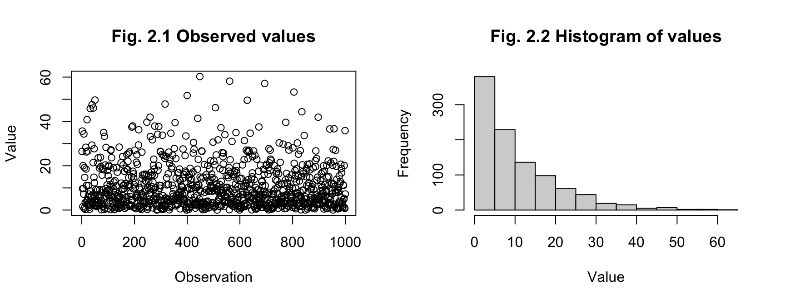
Answer: 1000 observations have been randomly generated as a sample, with the charts above showing the distribution of values.
exp_data %>% summarise(mean = mean(value), standard_deviation = sd(value)) %>%
kable(align = "cc")| mean | standard_deviation |
|---|---|
| 10.49528 | 9.983155 |
Answer:
As the standard deviation of an exponential distribution is equal to the
population mean (Siegel and Wagner 2022), the value for both in this
example is 10. This compares with our sample estimates
for the mean of 10.5 and standard deviation of
9.98.
The measures for the population and sample data are reasonably close (less than 5% difference), suggesting the sample is an accurate representation of the population.
# creating values to plot density function of exponential distribution
x <- seq(1, round(max(exp_data$value)))
y <- dexp(x, rate = 1/lambda)
exp_pop <- data.frame(x = x, y = y)par(mfrow=c(1,2))
annotation <- data.frame(x=20, y= (length(exp_data$value) *0.27), label=str_glue("Sample Mean: {round(mean(exp_data$value), 2)}"))
# Histogram of sample
p_sample <- exp_data %>% ggplot(aes(x = value)) +
geom_histogram( bins = 12, colour = "grey20", fill = "grey") +
geom_vline(aes(xintercept = mean(value)),
alpha = 0.6, color = "red", linetype = "dashed", size = 0.4) +
geom_text(data=annotation, aes( x=x, y=y, label=str_glue("Mean: {round(mean(exp_data$value), 3)}")), size=3) +
labs(title = "Fig. 2.3 Histogram of Sample", x="Value", y="Frequency") # Create density
p_pop <- exp_data %>% ggplot(aes(x = value)) +
geom_line(data=exp_pop, aes(x=x, y=y),
lwd = 1, color = "tomato", linetype = 1, alpha = 0.7) +
geom_vline(aes(xintercept = lambda), alpha = 0.6, color = "red", linetype = "dashed", size = 0.4) +
geom_text(data=annotation, aes( x=18, y=0.08, label=str_glue("Mean: {lambda}")), size=3) +
labs(title="Fig. 2.4 Density of Exponential Distribution", x="Value",y="Density") # Create combined plot
line_colours <- c("sample" = "steelblue", "population" = "tomato")
plot_combined <- exp_data %>% ggplot(aes(x = value)) +
geom_histogram(aes(y=..density..), bins=12, colour="grey20", fill="grey80") +
geom_density(aes(x = value, color = "sample"),
fill=4, lwd = 0.7, linetype = 2, alpha = 0.3) +
geom_line(data=exp_pop, aes(x=x, y=y, color = "population"),
lwd = 1, linetype = 1, alpha = 0.7) +
labs(title = "Fig. 2.5 Compare Density of Sample & Population", x="Value", y="Density", color = "") +
scale_color_manual(values = line_colours) +
theme(legend.key.height= unit(0., 'cm'), legend.key.width= unit(1, 'cm'))ggarrange(p_sample, p_pop, ncol = 2, nrow=1)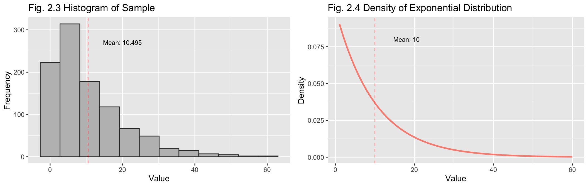
plot_combined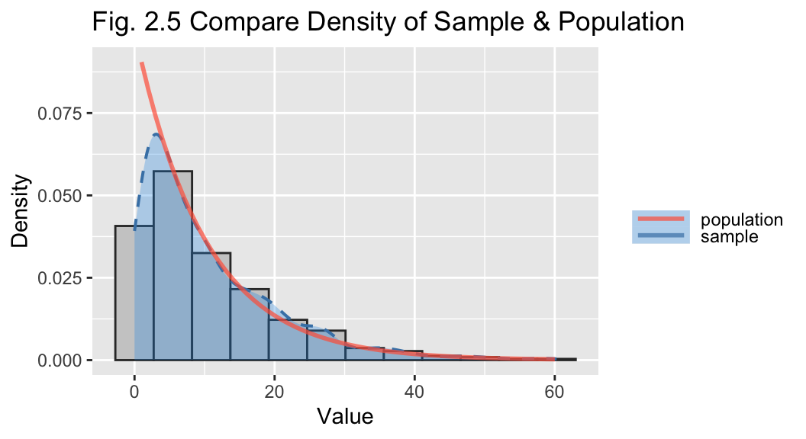
Answer:
Above are separate plots for the histogram of the sample values (Fig
2.1) and the density function for the exponential distribution (2.2),
with their respective means indicated. It can be seen that they are
similarly shaped.
The combined plot (Fig 2.3) overlays the density function of the population and the sample. This shows the sample is a good representation of the exponential distribution.
To generate the observations, this function creates a random set of numbers from the exponential distribution, then selects a sample of the desired sample size and calculates the sample mean. This repeats for the required number of observations with the output being a list of sample means.
# Function to generate sample means with default values
get_sample_means <- function(number=1000, sample_size=2, population_size=100000, lambda=10)
{ sample_means <- rep(NA, number) # create empty list
population <- rexp(population_size, 1/lambda) # generate population
for(i in 1:number) { # loop "number" times
samp <- sample(population, sample_size) # select values
sample_means[i] <- mean(samp) # add to dataset
}
sample_means
}Generate 1000 sample means of sample size 2:
# Set random seed
set.seed(seed)
sample_means2 <- get_sample_means(sample_size = 2) # fig 2.4
hist(sample_means2, breaks = 20, main = "Fig. 2.6 Histogram of Sample Means (n=2)",
xlab = "Value")
abline(v = mean(sample_means2), col = "red", lty = 2)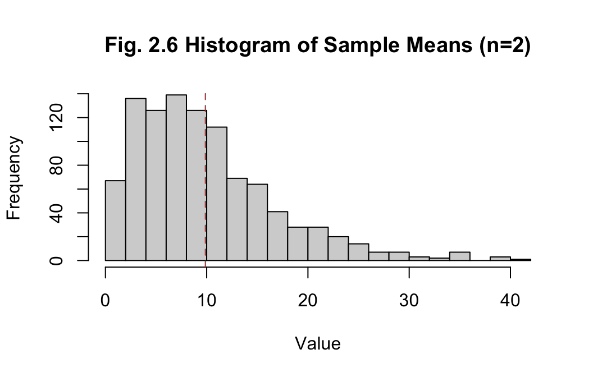
Answer:
The histogram of sample means with sample size 2 is right-skewed. The
mean of the sample means is 9.868, while the median is
8.397, which also indicates non-normality. The standard
deviation of 6.911 for the sample means is decreasing,
indicating the data is becoming less spread out. Overall, this is more
accurate than the previous example of the measures for one sample of
1000 observations, though improvement in the method is required to
approach normality.
Generate 1000 sample means of sample size 30:
# Set random seed
set.seed(seed)
# Generate 1000 sample means of sample size 30
sample_means30 <- get_sample_means(sample_size = 30) hist(sample_means30, breaks = 20, main = "Fig. 2.7 Histogram of Sample Means (n=30)",
xlab = "Value")
abline(v = mean(sample_means30), col = "red", lty = 2, lwd = 1.5)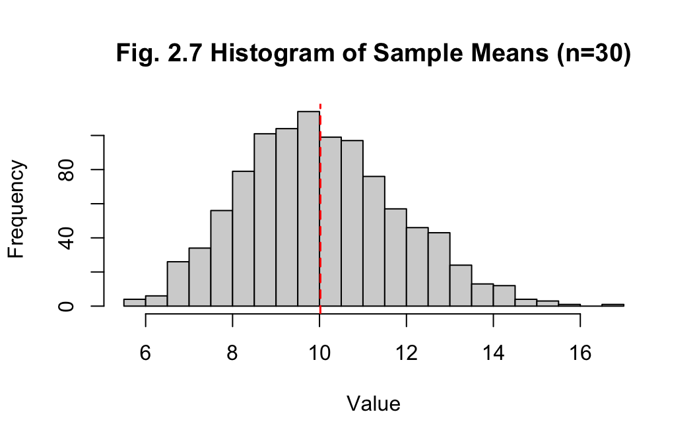
Answer:
The histogram of sample means with sample size 2 is looking close to a
normal distribution. The mean and median of the sample means are
10.02 and 9.906 respectively, which
are much closer, while the standard deviation has reduced to
1.799. Increasing the sample size to generate the
sample means has greatly improved the accuracy, which is to be expected
as the sample size approaches the population size.
A dairy processor is considering whether to change the design of its 2-litre containers of milk, and so they engage an advertising agency to develop a mock-up of what the new packaging will look like.
When the agency completed their mock-up of the new design, they decided to conduct a small market research study with 20 randomly selected participants. To begin with, each participant was shown the current design and asked to rate its attractiveness. Then they were shown the mock-up of the new design and asked to rate its attractiveness.
Attractiveness was measured on an 11-point scale, ranging from 0 to 10, where 0 means a design “is not at all attractive” and 10 means it “is very attractive” The study resulted in the current and new designs averaging 7.5 and 8.2 respectively, with a standard deviation of the difference being 1.9.
When senior management was shown the new design, and told the results of the research study, they were impressed - especially with the potential improvement in the attractiveness score that the new design would bring. Nonetheless, they turn to you as their chief data scientist to help them make sense of these findings.
Answer:
For this case a one-tailed paired t-test will be used as the variables
are dependent - each pair of ratings relate to the two versions of the
carton design. A t-test is suggested when the sample size is small
(\(n\leq30\)), as is the case here.
Without further information about the data, it will be assumed the
distribution is normal. (Surbhi 2018)
The null hypothesis, \(H_{0}\leq\mu\), will be that the new design mean rating is equal to or less than the current one. The alternative hypothesis, \(H_{a}>\mu\), will be that the new design has a greater mean rating than the current one.
Calculate t-score - \(t=\frac{\sigma-\mu}{s\sqrt{n}}\) - and then
use the function pt() to calculate the p-score to check
against our 5% significance level. Effect size and power will be
calculated also.
Where:
(Surbhi 2018)
First, setting values:
obs <- 20 # number of observations
mean_old <- 7.5 # mean rating for current(old) design
mean_new <- 8.2 # mean rating for proposed(new) design
sd_diff <- 1.9 # standard deviation of the difference between the two meansCalculations:
# t-score
t_score <- (mean_new - mean_old) / (sd_diff / sqrt(obs))
print(str_glue("t-score: {t_score}"))## t-score: 1.64762903605248# p-score
p <- pt(t_score, obs - 1, lower.tail = FALSE)
print(str_glue("p-score: {p}"))## p-score: 0.0579337413131463if (p > 0.05) {
print("Fail to reject the null hypothesis")
} else {
print("Reject the null hypothesis") }## [1] "Fail to reject the null hypothesis"From this t-test, we fail reject the null hypothesis and assume there is no significant statistical difference between the rating means of the two versions. Though, there are some caveats to consider given the lack of complete access to the detail of the data and the size of the sample - and noting that the calculated p-score is actually very close to the significance level of 5%
Calculate effect size and power
# calc effect size
d <- (8.2 - 7.5) / 1.9
# calc power value
pwr.t.test(n = 20, d = d, power = NULL,
type = "paired", alternative = "greater")##
## Paired t test power calculation
##
## n = 20
## d = 0.3684211
## sig.level = 0.05
## power = 0.4775867
## alternative = greater
##
## NOTE: n is number of *pairs*# Get minimum size for medium effect size (0.5) and 0.8 power
pwr.t.test(n = NULL, d = 0.5, power = 0.8,
type = "paired", alternative = "greater")##
## Paired t test power calculation
##
## n = 26.13753
## d = 0.5
## sig.level = 0.05
## power = 0.8
## alternative = greater
##
## NOTE: n is number of *pairs*Answer:
My advice to management is that patience should be exercised before
making any changes and that further analysis is required. While it seems
the new design has received higher average ratings than the old one,
from my statistical analysis the difference is marginal at best. For the
following reasons, I believe there is not sufficiently conclusive
evidence to move ahead with implementing a new design based on the data
alone - especially when considering the costs involved in that.
Key points:
Actions
And kudos to management for having the wisdom to use data science and statistics to drive their decision-making.
# Set parameter values
mean_X <- 50 # mean of X
mean_Y <- 55 # mean of Y
sd_X <- 10 # standard deviation of X
sd_Y <- 10 # standard deviation of Y
cor_XY <- 0.8 # correlation of X and Y
mu <- c(mean_X,mean_Y) # means
cov_XY <- sd_X * sd_Y * cor_XY # rearrange correlation formula
sigma <- matrix(c(sd_X^2, cov_XY, cov_XY, sd_Y^2), nrow = 2) # var-covar matrix
# Set random seed
set.seed(seed)
n <- 10 # number of observations
pop_10 <- mvrnorm(n, mu, sigma)
colnames(pop_10) <- c("X", "Y")
pop_10 %>% head(5) # look at first 5 sampled values## X Y
## [1,] 32.74119 47.71375
## [2,] 51.08754 44.92890
## [3,] 53.48131 62.85633
## [4,] 45.72604 45.01784
## [5,] 46.75191 49.40479Define functions for use in this problem:
# Scatter plot for X & Y - n = number of samples
plot_scatter <- function(dataframe, n, title) {
dataframe %>% ggplot(aes(x=X, y=Y)) +
geom_point() + ggtitle(title, subtitle = str_glue("n={n}")) }
# Convert to tidy data format for use with ggplot2
pivot_df_long <- function(dataframe) {
dataframe %>% pivot_longer(cols = c(X, Y),
names_to = "variable", values_to = "value") }
# Histogram - show variables as facets
plot_histogram_facets <- function(dataframe, title) {
dataframe %>% ggplot(mapping = aes(x = value, fill = variable), ) +
geom_histogram(bins=6, alpha=0.8, position = "identity", color = "white") +
facet_wrap(~variable) +
labs(x = "value", y = "Frequency", title = title, subtitle = str_glue("n={n}")) }# Q-Q plot - facet by variable (i.e X and Y) - add dashed line for normal dist.
plot_qqplot <- function(dataframe, title) {
dataframe %>%
ggplot(aes(sample = value, color = variable)) +
geom_qq(alpha = 0.9) +
geom_qq_line(linetype = "dashed", colour = "black", alpha = 0.5) +
facet_wrap(~variable, scales = "free_x") +
#scale_color_manual(values = c("grey20", "grey50")) +
labs(title = title) }
# Calculate Cohen's D for effect size
calc_cohen_d <- function (dataframe) {
calc <- dataframe %>%
pivot_df_long() %>%
cohens_d(value ~ variable, var.equal = TRUE)
return(calc$effsize) }Visualise observations as scatterplot
pop_10_df <- as.data.frame(pop_10)
pop_10_df %>% plot_scatter(n, title = "Fig. 4.1 Scatterplot - X vs Y")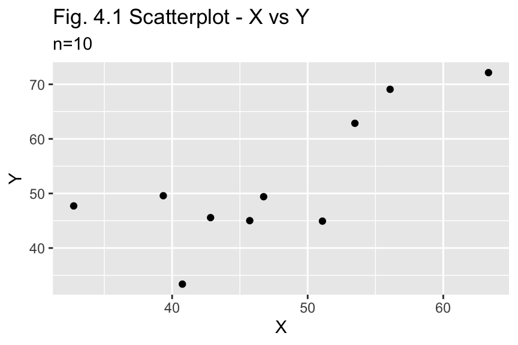
Answer:
To inform the choice of an appropriate hypothesis test, the data will be
checked for normality first.
Histogram - examine to see if a single peak and roughly symmetrical
pop_10_df %>% pivot_df_long() %>% plot_histogram_facets(title = "Fig 4.2 Histogram of values - compare X and Y")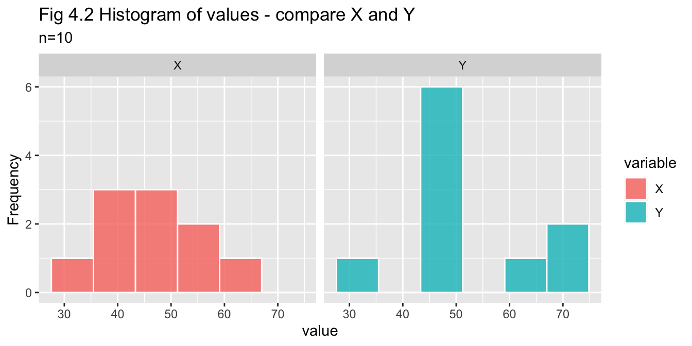
Q-Q plot - checking each variable against normal distribution
pop_10_df %>% pivot_df_long() %>% plot_qqplot(title="Fig. 4.3 QQ plot of X and Y")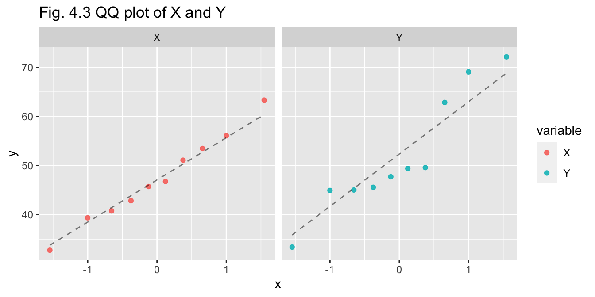
Shapiro-Wilk’s test - calculating p-values - if p > 0.05 we do not reject null hypothesis that data is normally distributed
sw_x <- shapiro.test(pop_10_df$X)
sw_y <- shapiro.test(pop_10_df$Y)
str_glue("X p-value: {sw_x$p.value}")## X p-value: 0.997071600148941str_glue("Y p-value: {sw_y$p.value}")## Y p-value: 0.19979958943426Summary (n=10)
Normality of the data has been investigated through visual and
statistical means:
Choice of test
A two-sample t-test will be an appropriate choice as:
Two-sample t-test
results_10 <- t.test(pop_10_df$X, pop_10_df$Y, alternative = "two.sided", paired = FALSE, var.equal= TRUE)
results_10##
## Two Sample t-test
##
## data: pop_10_df$X and pop_10_df$Y
## t = -0.99355, df = 18, p-value = 0.3336
## alternative hypothesis: true difference in means is not equal to 0
## 95 percent confidence interval:
## -14.805584 5.298283
## sample estimates:
## mean of x mean of y
## 47.21460 51.96825Power and Effect Size
# Calc Cohen's D for effect size (d)
d <- pop_10_df %>% calc_cohen_d()
# Calc power
n10_power <- pwr.t.test(n = n, d = d,
type = "paired", alternative = "two.sided")
n10_power##
## Paired t test power calculation
##
## n = 10
## d = 0.4443269
## sig.level = 0.05
## power = 0.242009
## alternative = two.sided
##
## NOTE: n is number of *pairs*Answer (n=10):
The p-value (0.334) is greater than the significance value (0.05) so we
fail to reject the null hypothesis that the means are equal, concluding
there is no significant difference between the means of the two
variables.
The 95% confidence interval width is 20.104.
The value for Cohen’s d or effect size is 0.444 and the power is 0.242
In concluding, the test has does not have strong ability to reach a correct conclusion for the following reasons:
# Set random seed
set.seed(seed)
n <- 30 # number of observations
pop_30 <- mvrnorm(n, mu, sigma)
colnames(pop_30) <- c("X", "Y")
head(pop_30, 5) # look at first 5 sampled values## X Y
## [1,] 34.93939 45.51554
## [2,] 50.39415 45.62229
## [3,] 56.80429 59.53335
## [4,] 49.96636 40.77752
## [5,] 42.10634 54.05036pop_30_df <- as.data.frame(pop_30)
pop_30_df %>% plot_scatter(n, title = "Fig. 4.4 Scatterplot - X vs Y")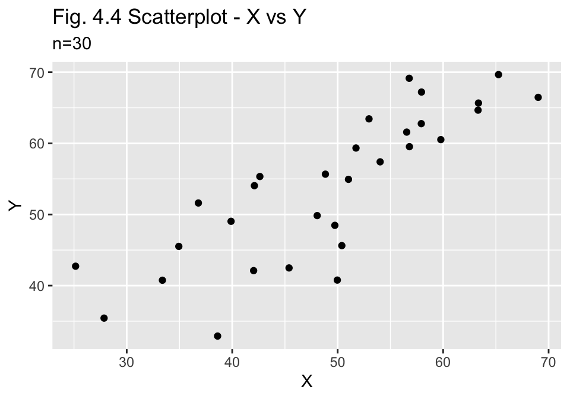
Answer:
As for (a) above, the data will be checked for normality first to inform
choice of test.
Histogram - examine to see if a single peak and roughly symmetrical
pop_30_df %>% pivot_df_long() %>% plot_histogram_facets(title = "Fig 4.5 Histogram of values - compare X and Y") 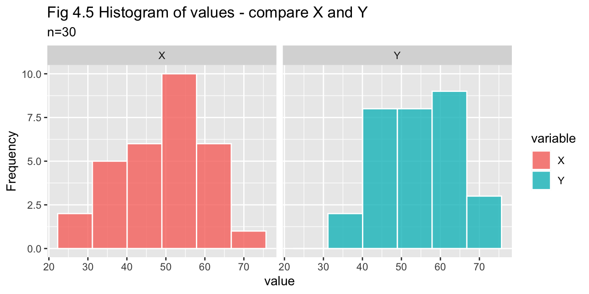
Q-Q plot - checking each variable against normal distribution
pop_30_df %>% pivot_df_long() %>% plot_qqplot(title="Fig. 4.6 QQ plot of X and Y")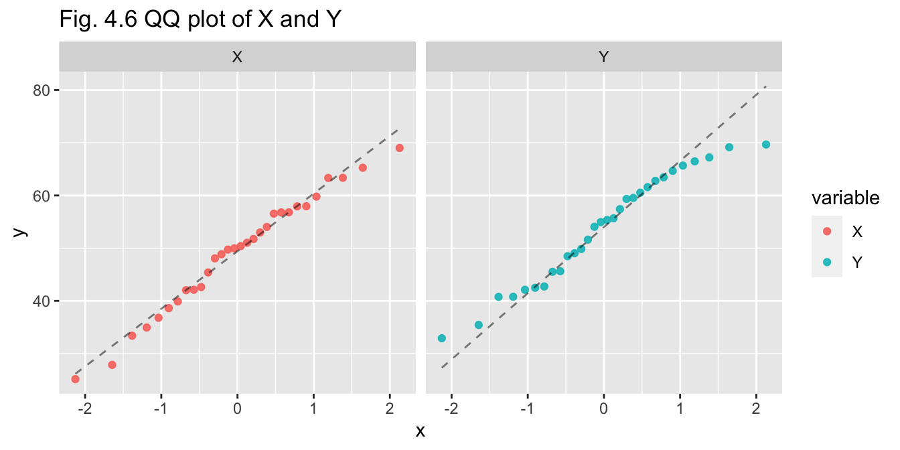
Shapiro-Wilk’s test - calculating p-values - if p > 0.05 we do not reject null hypothesis that data is normally distributed
sw_x <- shapiro.test(pop_30_df$X)
sw_y <- shapiro.test(pop_30_df$Y)
str_glue("X p-value: {sw_x$p.value}")## X p-value: 0.807045848755308str_glue("Y p-value: {sw_y$p.value}")## Y p-value: 0.29606841033515Summary (n=30)
Normality of the data has been investigated through visual and
statistical means:
Choice of test
A two-sample t-test will be an appropriate choice as:
Two-sample t-test
results_30 <- t.test(pop_30_df$X, pop_30_df$Y, alternative = "two.sided", paired = FALSE, var.equal= TRUE)
results_30##
## Two Sample t-test
##
## data: pop_30_df$X and pop_30_df$Y
## t = -1.7126, df = 58, p-value = 0.09214
## alternative hypothesis: true difference in means is not equal to 0
## 95 percent confidence interval:
## -10.3004657 0.8019027
## sample estimates:
## mean of x mean of y
## 49.07459 53.82387Power and Effect Size
# Calc Cohen's D for effect size (d)
d <- pop_30_df %>% calc_cohen_d()
# Calc power
n30_power <- pwr.t.test(n = n, d = d,
type = "paired", alternative = "two.sided")
n30_power##
## Paired t test power calculation
##
## n = 30
## d = 0.4421803
## sig.level = 0.05
## power = 0.6484789
## alternative = two.sided
##
## NOTE: n is number of *pairs*Answer (n=30):
The p-value (0.092) is greater than the significance value (0.05) so we
fail to reject the null hypothesis that the means are equal, concluding
there is no significant difference between the means of the two
variables.
The 95% confidence interval width is 11.102.
The value for Cohen’s d or effect size is 0.442 and the power is 0.648
In this instance, with a larger sample size, the test has come closer to reaching a correct conclusion.
In concluding, the test has a moderate ability to reach a correct conclusion than for the previous example for the following reasons:
Answer:
Comparing the results of parts (a) and (b), the following has been
observed:
The p-value for (a) was 0.334 compared to the much lower value for (b) of 0.092, which in turn is much closer to the significance level of 0.05, where we would reject the null hypothesis that the means are equal.
The confidence interval width for (b) is significantly narrower by 44.8% than (a) : 11.102 compared to 20.104
The effect size is similar for both: 0.444 (a) and 0.442 (b)
The probabilty of avoiding a Type II error (power) is unlikely for (a) at 24.2%, while (b) is more likely to be accruate at 64.8%
Overall, it can be concluded that the larger sample size has a positive impact on the ability of the testing to reach a correct conclusion.
A supermarket chain decides to conduct an experiment to compare the sales effectiveness of three promotional scenarios for its home brand chocolate blocks:
Eighteen comparable stores in terms of sales and store size are selected for running this experiment over a given month. Each scenario is randomly allocated to six stores.
Define functions for use in this problem:
cols <- c("#7b3f00", "#bd6f02", "#ffa600") # colours for plots
scenario_names <- c("scenario_1", "scenario_2", "scenario_3") # for filtering
# Box plot to check distribution of values by scenario
plot_scenario_box <- function(dataframe, title) {
plot(sales~scenario, data=dataframe, main=title, xlab="",ylab="sales ($000's)", col=cols) }
# Density plot for sales faceted by scenario
plot_scenario_density <- function(dataframe, title) {
dataframe %>% ggplot() + geom_density(aes(color = scenario, x = sales)) +
scale_colour_manual(values = cols, aesthetics = c("colour", "scenario")) +
facet_wrap(~scenario) + labs(title = title, x="sales ($000's)") }
# Generate z-scores - set filter
get_zscores <- function(dataframe, filter) {
z_scores <- scores(dataframe["sales"][dataframe["scenario"]==filter], type="z")}
# Print z-scores for each scenario
run_zscores <- function(dataframe) {
cat("Z-scores for sales by scenario \n")
for (scenario in scenario_names) {
cat(str_to_title(scenario),":\n", dataframe %>% get_zscores(filter=scenario), "\n") }}
# Check for outliers with Grubbs's test for each scenario
run_grubbs <- function(dataframe) {
cat("Grubbs's test for high and low outlier values in each scenario:\n")
for (scenario in scenario_names) {
high <- grubbs.test(dataframe["sales"][dataframe["scenario"] == scenario])
low <- grubbs.test(dataframe["sales"][dataframe["scenario"] == scenario], opposite=TRUE)
if (high$p.value < 0.05) {
print(str_glue("- {scenario} has a high outlier of value {max(dataframe['sales'][dataframe['scenario'] == scenario])}"))
} else {
if (low$p.value < 0.05) {
print(str_glue("- {scenario} has a low outlier of value {min(dataframe['sales'][dataframe['scenario'] == scenario])}"))
} else { print(str_glue("- There are no outliers in {scenario}")) }}}}
# Check for outliers with Dixon's test for each scenario
run_dixon <- function(dataframe) {
cat("Dixon's test for high and low outlier values in each scenario:\n")
for (scenario in scenario_names) {
high <- dixon.test(dataframe["sales"][dataframe["scenario"] == scenario])
low <- dixon.test(dataframe["sales"][dataframe["scenario"] == scenario], opposite=TRUE)
if (high$p.value < 0.05) {
print(str_glue("- {scenario} has a high outlier of value {max(dataframe['sales'][dataframe['scenario'] == scenario])}"))
} else {
if (low$p.value < 0.05) {
print(str_glue("- {scenario} has a low outlier of value {min(dataframe['sales'][dataframe['scenario'] == scenario])}"))
} else { print(str_glue("- There are no outliers in {scenario}")) }}}}# Set random seed
set.seed(seed)
# Randomise store list
store <- sample(1:18)
# Generate random sales data for each scenario
n = 6
sd = 30
scenario_1 <- round(rnorm(n, mean = 50, sd))
scenario_2 <- round(rnorm(n, mean = 55, sd))
scenario_3 <- round(rnorm(n, mean = 60, sd))
# Make dataframe - combine stores, scenario (as factor), sales - reorder by store
df_a <- data.frame(store,
scenario = factor(rep(c("scenario_1", "scenario_2", "scenario_3"), each=n)),
sales = c(scenario_1, scenario_2, scenario_3)) %>% arrange(store)
df_a %>% head(5) %>% kable(align = "clc")| store | scenario | sales |
|---|---|---|
| 1 | scenario_3 | 68 |
| 2 | scenario_2 | 54 |
| 3 | scenario_1 | 127 |
| 4 | scenario_3 | 68 |
| 5 | scenario_1 | 11 |
Looking at summary of data:
df_a %>% group_by(scenario) %>% summarise(mean = mean(sales), median = median(sales), `standard deviation` = sd(sales), `sales (000's)` = sum(sales)) %>% kable(caption = "Compare Scenario summary stats")| mean | median | standard deviation | sales (000’s) |
|---|---|---|---|
| 53.94444 | 64 | 35.86982 | 971 |
df_a %>% plot_scenario_box(title="Fig. 5.1 Boxplot Sales by Scenario")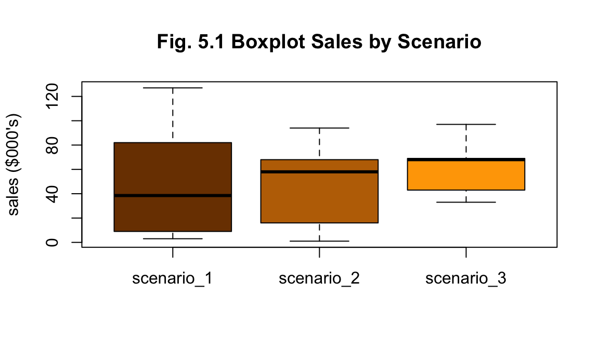
df_a %>% plot_scenario_density(title = "Fig. 5.2 Density of Sales by Scenario")The summary statistics for each scenario suggests Scenario 3 has performed better with greater total sales. Though scenarios 1 and 2 have larger values for standard deviation as seen in their more even spread of values (Figs. 5.1 and 5.2). No outliers are apparent from visual investigation (Fig. 5.1).
To test the difference between the means, a one-way ANOVA test will be applied. It is a tool that can compare the means of two or more groups and determine whether there are significant differences between the means.
Firstly, we will check for normality of distribution for each scenario’s values. The null hypothesis (\(H_0\)) is that the means are all the same - if the test fails to prove the null hypothesis, then we may assume normality of the distribution.
Secondly, we will test for homogeneity of variance for each group with Levene’s test.
Thirdly, we will check for outliers as ANOVA can be sensitive to them.
Finally, pending these outcomes, the ANOVA test will be conducted. The null hypothesis (\(H_0\)) is that the means are all the same - if the test fails to prove the null hypothesis, then we may assume normality of the distribution.
Check for normality - Shapiro-Wilks test
for (scenario in scenario_names) {
print(str_to_title(scenario))
print(shapiro.test(df_a$sales[df_a$scenario == scenario])) }## [1] "Scenario_1"
##
## Shapiro-Wilk normality test
##
## data: df_a$sales[df_a$scenario == scenario]
## W = 0.8749, p-value = 0.2464
##
## [1] "Scenario_2"
##
## Shapiro-Wilk normality test
##
## data: df_a$sales[df_a$scenario == scenario]
## W = 0.94426, p-value = 0.6937
##
## [1] "Scenario_3"
##
## Shapiro-Wilk normality test
##
## data: df_a$sales[df_a$scenario == scenario]
## W = 0.9234, p-value = 0.5302Check for homogeneity of variance - Levene’s test
leveneTest(sales ~ scenario, data = df_a, center = mean) %>% print()## Levene's Test for Homogeneity of Variance (center = mean)
## Df F value Pr(>F)
## group 2 3.2611 0.06669 .
## 15
## ---
## Signif. codes: 0 '***' 0.001 '**' 0.01 '*' 0.05 '.' 0.1 ' ' 1Check for outliers
Testing for outliers is important as ANOVA trsting can be sentive to them. Though given the small sample size, I have struggled to idnentify the best test as z-scores are not advised for sample size less than 30 and Grubbs and Dixon tests for six or less - and each scenario is based on six stores. Each of these tests will be run, but with the understanding that the results may not be reliable.
Z-scores - values greater than 3 indicate a value is more than 3 standard variations from mean:
df_a %>% run_zscores()## Z-scores for sales by scenario
## Scenario_1 :
## 1.539336 -0.7696682 -0.8094786 0.3251185 -0.9289099 0.6436018
## Scenario_2 :
## 0.1398433 1.297167 0.5449065 -0.9596141 -1.39361 0.371308
## Scenario_3 :
## 0.2217518 0.2217518 0.2661022 1.507913 -1.330511 -0.8870074No z-scores are found to be greater than 3, indicating no outliers. Though, as z-scores should be used where \(n\geq30\)`, Grubbs’s or Dixon’s test will be a better choice.
Grubbs’s and Dixon’s tests - values for each scenario are checked by these tests for either a single high or low outlier
df_a %>% run_grubbs()## Grubbs's test for high and low outlier values in each scenario:
## - There are no outliers in scenario_1
## - There are no outliers in scenario_2
## - There are no outliers in scenario_3df_a %>% run_dixon()## Dixon's test for high and low outlier values in each scenario:
## - There are no outliers in scenario_1
## - There are no outliers in scenario_2
## - There are no outliers in scenario_3Preliminary investigation:
Having checked for these features, we can now conduct our one-way ANOVA test.
ANOVA test
results_a <- aov(sales ~ scenario, data = df_a)
summary_aov_a <-summary(results_a)
summary_aov_a## Df Sum Sq Mean Sq F value Pr(>F)
## scenario 2 739 369.4 0.262 0.773
## Residuals 15 21134 1408.9par(mfrow=c(1,2))
plot(results_a, 1, main = "Fig. 5.3")
plot(results_a, 2, main = "Fig. 5.4")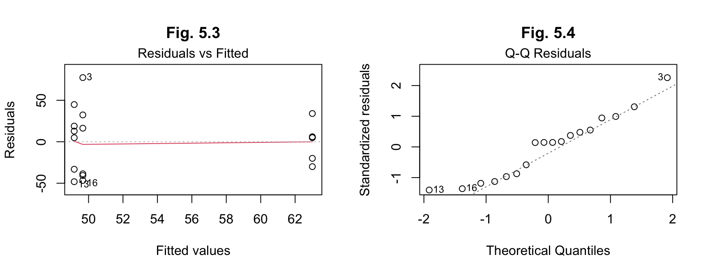
The results for (a) from ANOVA indicate an F value of 0.262 and a p-value of 0.773. The F value is not high, indicating a weak relationship between the variables, while the p-value is less than 0.05, so we fail to reject the null hypothesis and assume that there is no significant difference between the means.
The post hoc tests on the residuals here are not necessarily required, given the assumption of no significant difference, but have been double-checked anyway. The results indicate normality of distribution of the residuals.
There is no need to calculate effect size given the assumption of no significant difference.
Conclusion - sd=30:
From these results, while scenario 3 has a greater total than the other two, the testing indicates there is no significant difference between the scenarios when comparing their means.
# Set random seed
set.seed(seed)
# Randomise store list
store <- sample(1:18)
# Generate random sales data for each scenario
n = 6
sd = 25
scenario_1 <- round(rnorm(n, mean = 50, sd))
scenario_2 <- round(rnorm(n, mean = 55, sd))
scenario_3 <- round(rnorm(n, mean = 60, sd))
# Make dataframe - combine stores, scenario (as factor), sales - reorder by store
df_b <- data.frame(store,
scenario = factor(rep(c("scenario_1", "scenario_2", "scenario_3"), each=n)),
sales = c(scenario_1, scenario_2, scenario_3)) %>%
arrange(store)
df_b %>% head(5) %>% kable(align = "clc")| store | scenario | sales |
|---|---|---|
| 1 | scenario_3 | 67 |
| 2 | scenario_2 | 54 |
| 3 | scenario_1 | 114 |
| 4 | scenario_3 | 67 |
| 5 | scenario_1 | 17 |
Looking at summary of data:
df_b %>% group_by(scenario) %>% summarise(mean = mean(sales), median = median(sales), `standard deviation` = sd(sales), `sales (000's)` = sum(sales)) %>% kable(caption = "Compare Scenario summary stats")| mean | median | standard deviation | sales (000’s) |
|---|---|---|---|
| 54.16667 | 62 | 29.9691 | 975 |
df_b %>% plot_scenario_box(title="Fig. 5.5 Boxplot of Sales by Scenario")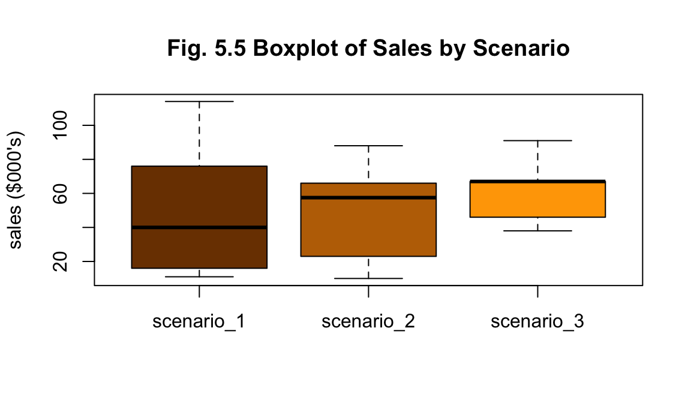
df_b %>% plot_scenario_density(title = "Fig. 5.6 Density of Sales by Scenario")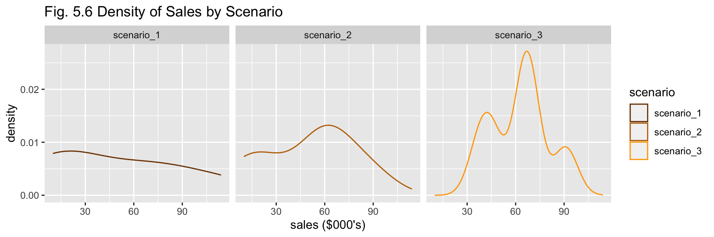
The nature of the summary statistics for (b) is similar to (a) - scenario 3 has greater total sales, scenarios 1 and 2 have greater variability (Figs. 5.5 and 5.6). No outliers are apparent from visual investigation (Fig. 5.5).
To test the difference between the means, a one-way ANOVA test will be applied. It is a tool that can compare the means of two or more groups and determine whether there are significant differences between the means.
As above for (a) the process will be repeated:
Check for normality - Shapiro-Wilks test
for (scenario in scenario_names) {
print(str_to_title(scenario))
print(shapiro.test(df_b$sales[df_b$scenario == scenario])) }## [1] "Scenario_1"
##
## Shapiro-Wilk normality test
##
## data: df_b$sales[df_b$scenario == scenario]
## W = 0.87202, p-value = 0.2344
##
## [1] "Scenario_2"
##
## Shapiro-Wilk normality test
##
## data: df_b$sales[df_b$scenario == scenario]
## W = 0.94804, p-value = 0.7244
##
## [1] "Scenario_3"
##
## Shapiro-Wilk normality test
##
## data: df_b$sales[df_b$scenario == scenario]
## W = 0.91547, p-value = 0.4733Check for homogeneity of variance - Levene’s test
leveneTest(sales ~ scenario, data = df_b, center = mean) %>% print()## Levene's Test for Homogeneity of Variance (center = mean)
## Df F value Pr(>F)
## group 2 3.2014 0.06953 .
## 15
## ---
## Signif. codes: 0 '***' 0.001 '**' 0.01 '*' 0.05 '.' 0.1 ' ' 1Check for outliers
As above for (a), z-scores, Grubb’s and Dixon’s tests will be used to check for outliers, though with it noted again that the sample size is insufficient for reliable results.
Z-scores - values greater than 3 indicate a value is more than 3 standard variations from mean:
df_b %>% run_zscores()## Z-scores for sales by scenario
## Scenario_1 :
## 1.545781 -0.7788817 -0.8028473 0.3235355 -0.9226753 0.6350882
## Scenario_2 :
## 0.1270374 1.30502 0.5427961 -0.947006 -1.397411 0.3695633
## Scenario_3 :
## 0.2319359 0.2319359 0.2319359 1.516504 -1.32025 -0.892061No z-scores are found to be greater than 3, indicating no outliers. Though, as z-scores should be used where \(n\geq30\)`, Grubbs’s or Dixon’s test will be a better choice.
Grubb’s and Dixon’s tests - values for each scenario are checked by these tests for either a single high or low outlier
df_a %>% run_grubbs()## Grubbs's test for high and low outlier values in each scenario:
## - There are no outliers in scenario_1
## - There are no outliers in scenario_2
## - There are no outliers in scenario_3df_a %>% run_dixon()## Dixon's test for high and low outlier values in each scenario:
## - There are no outliers in scenario_1
## - There are no outliers in scenario_2
## - There are no outliers in scenario_3Preliminary investigation:
Having checked for these features, we can now conduct our one-way ANOVA test.
ANOVA test
results_b <- aov(sales ~ scenario, data = df_b)
summary_aov_b <-summary(results_b)
summary_aov_b## Df Sum Sq Mean Sq F value Pr(>F)
## scenario 2 652 326.2 0.335 0.721
## Residuals 15 14616 974.4par(mfrow=c(1,2))
plot(results_b, 1, main = "Fig 5.7")
plot(results_b, 2, main = "Fig 5.8")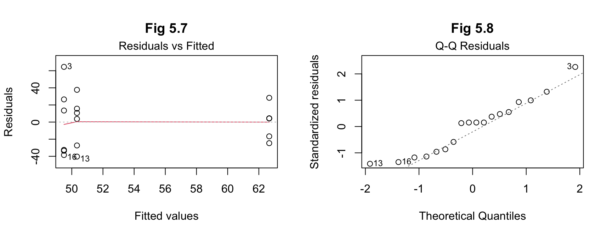 The results for (b) from ANOVA indicate an F value of 0.335 and a p-value of 0.721. The F value is not high, indicating a weak relationship between the variables, while the p-value is less than 0.05, so we fail to reject the null hypothesis and assume that there is no significant difference between the means.
Again, the effect size and post hoc tests are not required given the assumption of no difference, but the latter have been included for consistency in this report. The results indicate normality of distribution of the residuals.
Conclusion - sd=25
From these results, while scenario 3 has a greater total than the other
two, the testing indicates there is no significant difference between
the scenarios when comparing their means.
Answer:
In the data collected for this month of sales, scenario 3 of having both
the catalogue and end-of-aisle display generated more sales, but
scenario 1 with only the catalogue had a greater range of sales
figures.
When using ANOVA testing, neither (a) nor (b) showed any significant difference in means between the three scenarios. Though, there was a slight increase in F value and decrease in p-value for the lower standard deviation value. This suggests that if the standard deviation value could be reduced sufficiently, then any differences will be more likely to be found.
Interestingly, while the range of values for sales is narrower in (b), the sales totals for (a) and (b) are almost identical, despite the difference is standard deviation for both. This will be because of resetting the random seed each time, resulting in the generated values following the same distribution pattern but with a greater or lesser variance corresponding to the change in standard deviation.
For both versions, the fact that there are only six stores with one month’s worth of sales for each scenario, makes it difficult to be statistically rigorous with the testing, as the sample sizes are smaller than would be ideal for some of the tests.
Ideally more testing would be done, whether in more stores and/or longer time period for more data. Why did the catalogue-only stores have such a wide range of values - are catalogues distributed equally for each store? Were the aisles located in the same location for each store? Why did the stores that did both have a more consistent level of sales - but not necessarily large? Is it just this month or would this be a repeated pattern?
Alternatively, doing only two scenarios across the 18 stores might help more clearly identify any differences between them.
Conclusion In conclusion, there has been no significant difference found between the average sales amounts for the three scenarios from the data provided.
Ideally, further data collection and research would be undertaken for more conclusive results.
Though, if required to recommend one option, the results may help management decide by considering them each by level of risk. With no significant difference in the means, in order of risk:
BYJU’S Learning (2023) Exponential Distribution, BYJU’S Learning website, accessed 30 May 2023. https://byjus.com/maths/exponential-distribution
CRAN (The Comprehensive R Archive Network) (n.d.) A simple example, CRAN website, accessed 1 June 2023. https://cran.r-project.org/web/packages/pwr/vignettes/pwr-vignette.html
Dorai-Raj S (2022) binom: Binomial Confidence Intervals for Several Parameterizations, CRAN website, accessed 28 May 2023. https://cran.r-project.org/web/packages/binom/binom.pdf
Heiss A (2020) Generating random numbers, Program Evaluation for Public Service website, accessed 26 May 2023. https://evalf20.classes.andrewheiss.com/example/random-numbers/#binomial-distribution
iforgetredditpws (2021) Add legend on ggplot with two overlayed lines from different data sets?, reddit website, accessed 31 May 2023. <https://www.reddit.com/r/RStudio/comments/qgw05r/add_legend_on_ggplot_with_two_overlayed_lines
Kassambara A (n.d.) One-Way ANOVA Test in R, STHDA (Statistical tools for high-throughput data analysis) website, accessed 03 June 2023. http://www.sthda.com/english/wiki/one-way-anova-test-in-r
Khan Academy (2018) Two-sample t test for difference of means, Khan Academy website, accessed 29 May 2023. https://www.khanacademy.org/math/ap-statistics/xfb5d8e68:inference-quantitative-means/two-sample-t-test-means/v/two-sample-t-test-for-difference-of-means
Quiaoit J and Shah K (2022) 4.9 Combining Random Variables, Fiveable website, accessed 28 May 2023. https://library.fiveable.me/ap-stats/unit-4/combining-random-variables/study-guide/4a4RK1Yx83jckDNdzaX6
Siegel A F and Wagner M R (2022) () Practical Business Statistics, 8th edn, Academic Press, doi.org/10.1016/B978-0-12-820025-4.00007-5.
Soage J C (2023) Histogram with density in ggplot2, R Charts website, accessed 28 May 2023. <https://r-charts.com/distribution/histogram-density-ggplot2
Soetewey A (2020) Outliers detection in R, Stats and R website, accessed 02 June 2023. https://statsandr.com/blog/outliers-detection-in-r
Soetewey A (2020) Student’s t-test in R and by hand: how to compare two groups under different scenarios?, Stats and R website, accessed 31 May 2023. https://statsandr.com/blog/student-s-t-test-in-r-and-by-hand-how-to-compare-two-groups-under-different-scenarios
Surbhi S (2018) Difference Between T-test and Z-test, Key Differences website, accessed 31 May 2023. https://keydifferences.com/difference-between-t-test-and-z-test.html
Wlömert N (2021) 9 R Markdown & assignments, Marketing Research Design & Analysis 2021 website, accessed 30 May 2023. https://imsmwu.github.io/MRDA2020/r-markdown-assignments.html
R packages
Bache S, Wickham H (2022) magrittr: A Forward-Pipe Operator for R, R package version 2.0.3. https://CRAN.R-project.org/package=magrittr
Champely S (2020) pwr: Basic Functions for Power Analysis, R package version 1.3-0. https://CRAN.R-project.org/package=pwr
Dorai-Raj S (2022) binom: Binomial Confidence Intervals for Several Parameterizations, R package version 1.1-1.1. https://CRAN.R-project.org/package=binom
Fox J and Weisberg S (2019) An R Companion to Applied Regression, 3rd edition, Sage, Thousand Oaks CA. https://socialsciences.mcmaster.ca/jfox/Books/Companion
Kassambara A (2023) ggpubr: ‘ggplot2’ Based Publication Ready Plots, R package version 0.6.0. https://CRAN.R-project.org/package=ggpubr
Kassambara A (2023) rstatix: Pipe-Friendly Framework for Basic Statistical Tests, R package version 0.7.2. https://CRAN.R-project.org/package=rstatix
Komsta L (2022) outliers: Tests for Outliers, R package version 0.15. https://CRAN.R-project.org/package=outliers
Venables W N and Ripley B D (2002) Modern Applied Statistics with S, Fourth edn, Springer, New York. ISBN 0-387-95457-0
Wickham H (2022). stringr: Simple, Consistent Wrappers for Common String Operations. R package version 1.5.0, https://CRAN.R-project.org/package=stringr.
Wickham H. (2016) ggplot2: Elegant Graphics for Data Analysis, Springer-Verlag New York.
Hadley Wickham (2011) The Split-Apply-Combine Strategy for Data Analysis, Journal of Statistical Software, 40(1), 1-29. https://www.jstatsoft.org/v40/i01
Wickham H, François R, Henry L, Müller K, Vaughan D (2023) dplyr: A Grammar of Data Manipulation, R package version 1.1.0. https://CRAN.R-project.org/package=dplyr
Wickham H, Vaughan D, Girlich M (2023) tidyr: Tidy Messy Data, R package version 1.3.0. https://CRAN.R-project.org/package=tidyr
Yihui X (2023) knitr: A General-Purpose Package for Dynamic Report Generation in R, R package version 1.42.